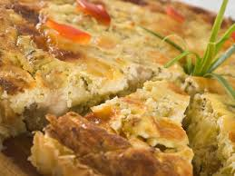

Recetas para Celíacos

Pastel de Pollo sin Gluten
Ingredientes:
- 2 pechugas de pollo
- 1 cebolla
- 1 zanahoria
- ...
Preparación:
- Cortar las pechugas en trozos y cocinarlas.
- Picar la cebolla y la zanahoria...
- ...

Pastas de Arroz con Verduras
Ingredientes:
- 200g de pastas de arroz
- 1 pimiento rojo
- 1 pimiento verde
- ...
Preparación:
- Cocinar las pastas de arroz...
- Cortar los pimientos en tiras...
- ...

Tarta de Manzana sin Gluten
Ingredientes:
- 2 manzanas
- 200g de harina sin gluten
- 100g de azúcar
- ...
Preparación:
- Pelar y cortar las manzanas...
- Mezclar la harina sin gluten con el azúcar...
- ...

Ensalada de Quinoa y Verduras
Ingredientes:
- 1 taza de quinoa
- 1 pepino
- 1 tomate
- ...
Preparación:
- Cocinar la quinoa según las instrucciones...
- Cortar el pepino y el tomate en cubos...
- ...

Pizza de Verduras sin Gluten
Ingredientes:
- Base de pizza sin gluten
- Tomate frito
- Queso rallado sin gluten
- ...
Preparación:
- Extender el tomate frito sobre la base de pizza...
- Esparcir el queso rallado...
- ...